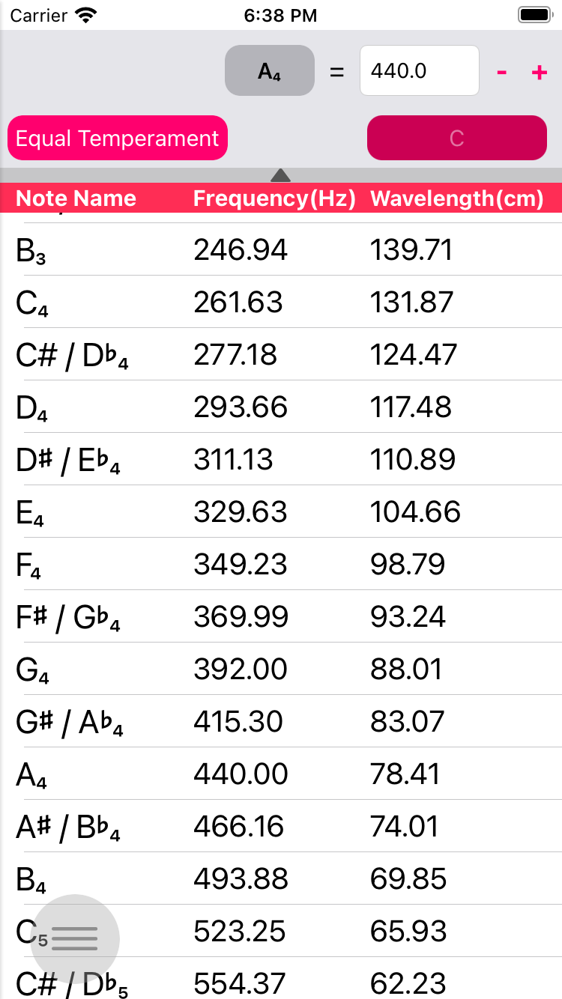
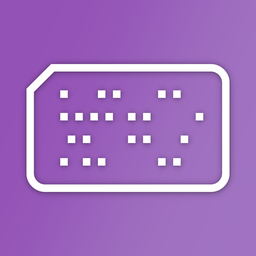
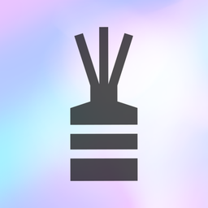

Tuner XR
Tuner XR(Tuner with eXtRa features)はボーカル、楽器などを演奏する音楽家のためのアプリケーションでは、次のような機能を提供しています。
- 平均律と純正律の両方に対応できるチューニング機能
- 固定された周波数ではなく、様々な周波数を基準にチューニングすることができます。
- 音を再生することができる周波数（音の高さ）テーブル
- 私のチューニングの結果を記録して閲覧することができる統計機能
他の便利な機能もあります。
- iPad、iPhone、およびiPod touchの（第7世代）全機種に対応するユニバーサルデザイン
- iCloud連動によって私のApple機器間のチューニング記録結果を同期させることができていること
- ダークモードをサポート
使い方
- 画面を左端からスワイプするか、すべての画面で左下にある丸ボタンをクリックすると、メニューを開くことができます。
チューナー

- まず、このチューナーは、マイクを介して音をチューニングするため、周囲の環境が静かな場所で、十分なボリュームで楽器やボーカルの特定の音を演奏します。周辺にノイズが強い場合、測定結果が不正確になることができます。
- 上部のパネルで基準チューニングシステム、周波数などを設定することができます。
- 上部のボタンとテキストフィールドでの基準となる音と周波数を設定することができます。上記の例は、A4 = 440Hzに設定したものです。他の例として、バロックチューニングを使用する場合はA4=415Hzに設定します。
- 左のボタンは、チューニングシステムを設定します。平均律または純正律を選択することができます。
- 右ボタンは、チューニングシステムを純正律で選択された場合には、基準となる長調スケールを設定することができます。たとえば、C4 = 261.63Hz、純正律とスケールCを設定した場合は、C長調に基づいてチューニングの結果が提供されます。
- 純正律モードで短調を設定しようとする場合、単3度の下の関係調を選択します。Cを選択すると、A短調でも使用可能です。
- 一番左の矢印ボタンをタッチすると、パネルを隠すことができます。
- 次のインジケータは、チューニング結果の精度を提供します。音を演奏すると、対応する音を自動的に検出して、その音の標準周波数で最大+-50セントまでチューニング結果を確認することができます。
- 針が左にある場合は、元の音程よりも低く演奏されており、した中である場合、正確なピッチで演奏されており、右に位置する場合、元の音の高さよりも高く演奏されていることを意味します。
- チューニング時に特定の音を4.5秒以上均等に演奏した場合、そのチューニングの結果が統計メニューに記録されます。右下の記録状態ウィンドウで記録の進行、失敗、成功するかどうかを表示します。
周波数テーブル（ピッチテーブル）

- 周波数（Hz）とチューニングシステム、スケール（純正律の場合）を入力すると、自動的にC1 〜 B7の範囲の各ノートの周波数を計算して表示し、その音を再生することができます。
- 上部のボタンとテキストフィールドでの基準となる音と周波数を設定することができます。上記の例は、A4 = 440Hzに設定したものです。他の例として、バロックチューニングを使用する場合はA4=415Hzに設定します。
- 左のボタンは、チューニングシステムを設定します。平均律または純正律を選択することができます。
- 右ボタンは、チューニングシステムを純正律で選択された場合には、基準となる長調スケールを設定することができます。たとえば、C4 = 261.63Hz、純正律とスケールCを設定した場合は、C長調に基づいてテーブルの結果が提供されます。
- 純正律モードで短調を設定しようとする場合、単3度の下の関係調を選択します。Cを選択すると、A短調でも使用可能です。
- 下の矢印ボタンをタッチすると、パネルを隠すことができます。
- 各セルをクリックすると、その周波数の音が再生されます。
統計

- チューナーメニューから特定の音を4.5秒以上均等に演奏した場合、そのチューニングの結果が統計メニューに記録されます。
- 標準周波数（Hz）と、実際の演奏された音の周波数、二違いなどがセント（cent）単位で表示されます。
- 特定の履歴を削除したい場合は、特定のセルを左にスワイプすると削除ボタンが表示されます。削除ボタンを押して削除することができます。
- 複数の機器がiCloudアカウントに接続している場合、記録を各機器間で同期して、表示することができます。
- 最近の50個の記録がグラフに表示され、演奏された周波数と基準周波数との差を見ることができます。周波数を基準にした場合は、周波数基準として表示され、セント（cent）基準とした場合、0セントに基づいて-50セント〜+50セントの範囲内でどのよう標準周波数との差があるのか見ることができます。
- [設定]メニューから記録対象の範囲を指定することができます。その範囲外の音は記録されません。
設定

- 表示モードの選択：アプリで表示されるディスプレイモードを選択します。「システム」の場合、OSの基本的な設定を適用され、ライト、ダークモードは、OSの設定かどうかにかかわらず、ライトまたはダークモードで表示します。
- 表記：チューナー、統計メニューから半音をシャープ（＃）で表示するか、またはフラット（b）に表示するかを決定します。
- 統計記録音域：この部分を設定すると、チューナーのメニューから、その範囲内にある音だけ統計に記録します。
コンタクト
このアプリケーションに関連付けられてのお問い合わせ、提案、バグレポートなどを受けています。意見をいただければ、その内容を積極的に反映するようにします。
BGSMM의 다른 앱 둘러보기
-
UltimateScale
UtimateScaleは、さまざまなキーをサポートする内蔵シンセサイザーキーボードと、クイズによる効率的な学習が可能なスケール（音階）学習ヘルパーです。
-

Make My MusicBox
iPhone / iPadでミュージックボックスが生まれ変わりました。 独自のオルゴールと楽譜を作成してください。
-

DiffuserStick
DiffuserStickアプリはディフューザースティック交換サイクル管理ヘルパーアプリで、ディフューザーの写真とともにディフューザースティックを差し込んだ日を記録し、交換期間になるとプッシュアラームを介して通知します。